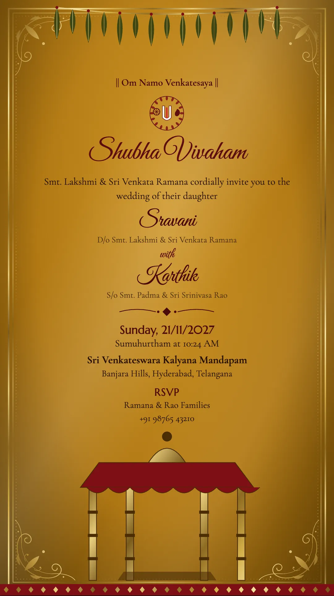
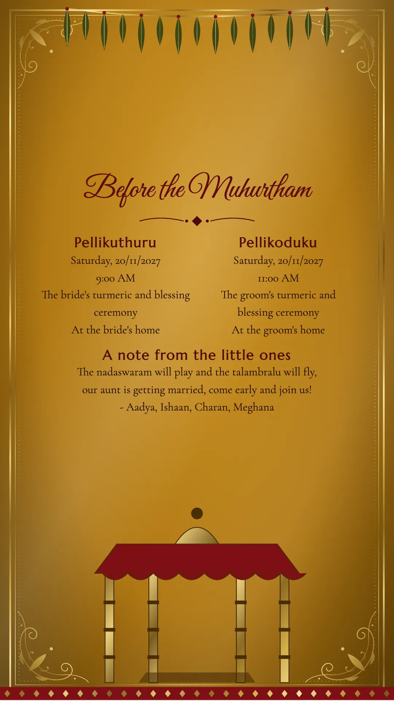
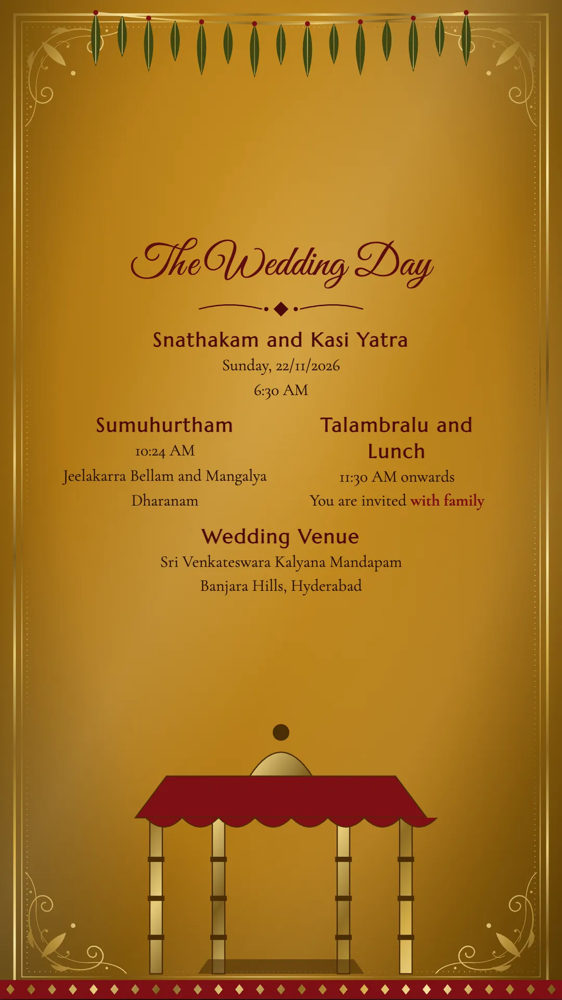
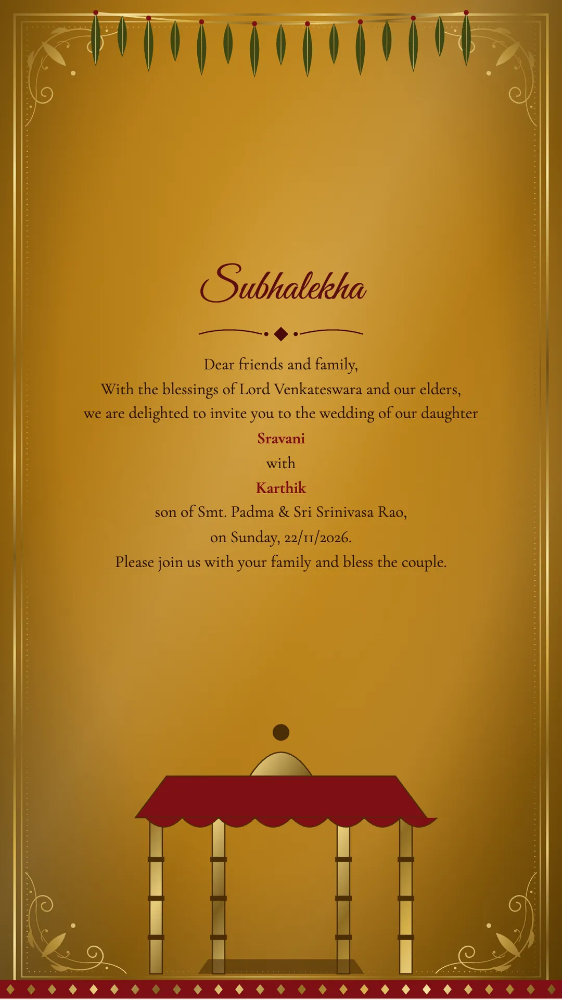
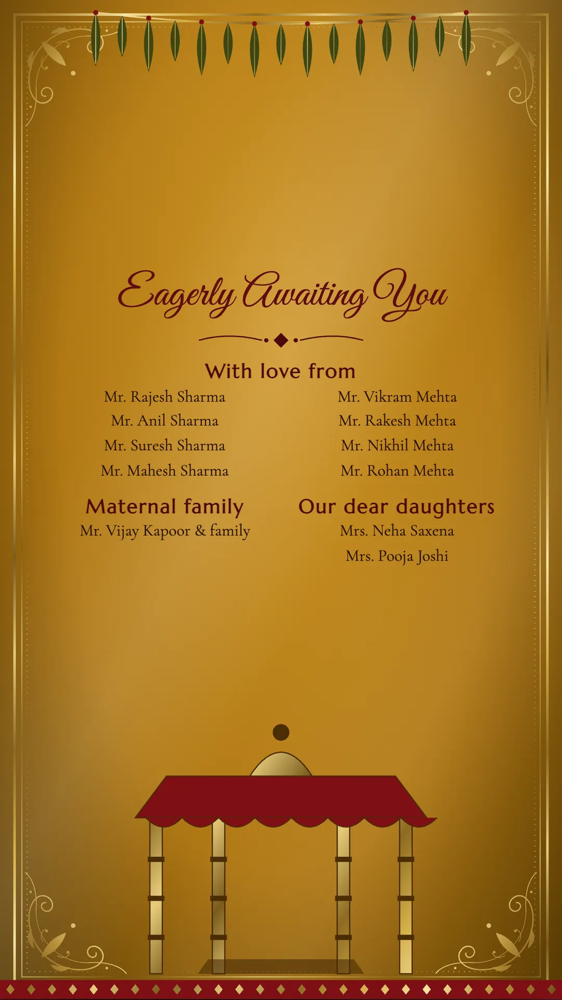
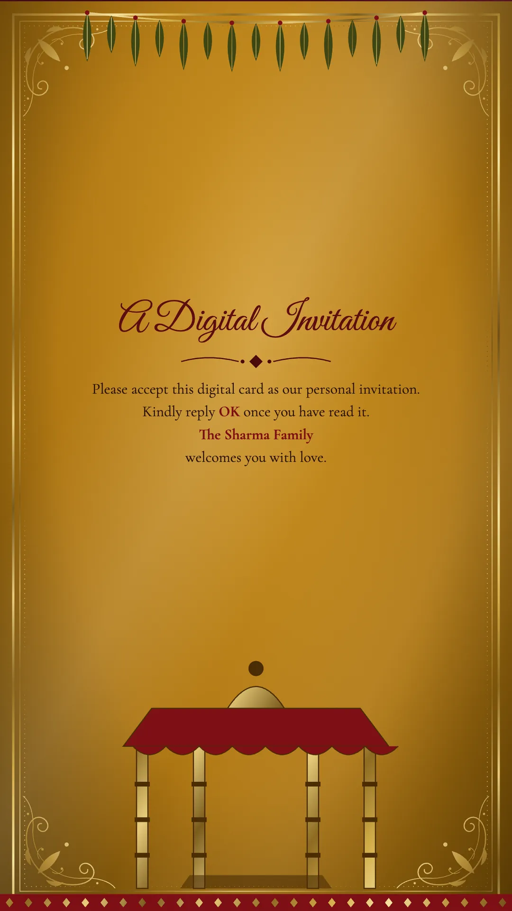

Designs › Wedding (Vivah) › Pelli Patrika Turmeric Mandapam
Pelli Patrika Turmeric Mandapam: Telugu-style wedding card in English

- Ceremony: Wedding (Vivah)
- Language: English
- God or sacred symbol: Tirupati Balaji
- Format: WhatsApp image (1080 x 1920 px) and 5 x 7 inch print PDF
- Pages: 6 (cover, functions, wedding-day programme, letter, family names, closing message)
About this design
Pelli patrika is the Telugu name for the wedding card. This one is deep turmeric gold, brightest in the middle and darkening to brown at the corners, with a fine gold double frame and curled gold flourishes in each corner. A thoranam of pointed mango leaves on a gold thread hangs across the top, with small kumkum red beads between the leaves. At the bottom is a kalyana mandapam: four gold pillars under a scalloped red canopy and a gold dome, standing on a kumkum red strip patterned with small gold diamonds.
The cover opens with || Om Namo Venkatesaya || and the namam emblem of Venkateswara (Tirupati Balaji). Below it, Shubha Vivaham is in maroon script, the couple's names are in the same script, and the rest is a dark brown serif.
The sample wording follows a Telugu wedding in Hyderabad: pellikuthuru and pellikoduku, the turmeric ceremonies for the bride and groom, the day before; snathakam and Kasi Yatra early on the wedding morning; the sumuhurtham at 10:24 am with jeelakarra bellam and mangalya dharanam; then talambralu and lunch at the kalyana mandapam. Parents are written as Smt. and Sri, and the letter asks for the blessings of Lord Venkateswara. Change the muhurtham to the time your family's priest gives. Telugu is not one of the editor's languages yet, so the card can be in English, Hindi, Marathi, Gujarati, Punjabi or Tamil; in another language it opens with that language's shared sample.
It suits Telugu families from Andhra Pradesh and Telangana, and Telugu families living elsewhere, who want an English card that still looks like a pelli patrika. For a card in Tamil with the same Venkateswara invocation, see Kanchipuram Temple Silk.
All 6 pages
The cover is shown above. These are the other pages exactly as the card opens in the editor, with the sample family names.





Sample wording on this card
The cover opens in the editor with this text.
|| Om Namo Venkatesaya ||
Shubha Vivaham
Smt. Lakshmi & Sri Venkata Ramana cordially invite you to the wedding of their daughter
Sravani
D/o Smt. Lakshmi & Sri Venkata Ramana
with
Karthik
S/o Smt. Padma & Sri Srinivasa Rao
Sunday, 22/11/2026
Sumuhurtham at 10:24 AM
Sri Venkateswara Kalyana Mandapam
Banjara Hills, Hyderabad, Telangana
RSVP
Ramana & Rao Families
+91 98765 43210
The other five pages are Before the Muhurtham (pellikuthuru and pellikoduku), The Wedding Day (snathakam and Kasi Yatra, the muhurtham, talambralu and lunch, and the venue), Subhalekha (the letter), Eagerly Awaiting You (the family names and maternal uncles) and A Digital Subhalekha (the closing message).